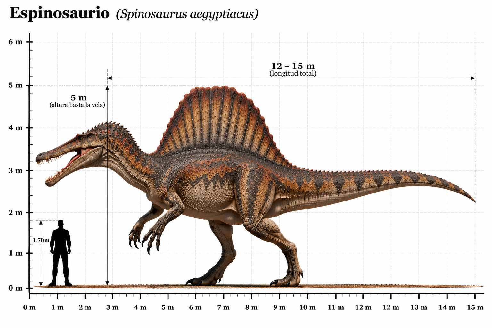

Spinosaurus aegyptiacus

El Spinosaurus aegyptiacus fue uno de los mayores dinosaurios terópodos carnívoros conocidos. Habitó el norte de África durante el Cretácico tardío, hace aproximadamente entre 100 y 94 millones de años. Su característica más distintiva era la enorme vela dorsal formada por espinas vertebrales alargadas, que podía superar los 1,5 metros de altura. Poseía un cráneo largo y estrecho, semejante al de un cocodrilo, con dientes cónicos adaptados para capturar peces. A diferencia de muchos otros grandes terópodos, el Spinosaurus presentaba numerosas adaptaciones relacionadas con la vida acuática, como huesos relativamente densos y una cola alta y flexible. Los fósiles indican que habitaba ecosistemas fluviales y que los peces constituían una parte importante de su alimentación. Sin embargo, los científicos todavía debaten hasta qué punto era capaz de nadar activamente y perseguir presas bajo el agua. Su longitud pudo alcanzar aproximadamente entre 14 y 15 metros, aunque las estimaciones varían según los estudios.
- Grupo: Terópodo.
- Familia: Spinosauridae (espinosáuridos).
- Período: Cretácico tardío (hace aproximadamente 100–94 millones de años).
- Alimentación: Carnívoro, principalmente piscívoro.
- Longitud: Aproximadamente 14–15 metros.
- Altura: Aproximadamente 3–4 metros hasta la cadera, según la reconstrucción.
- Localización: Norte de África (actuales Egipto y Marruecos).
